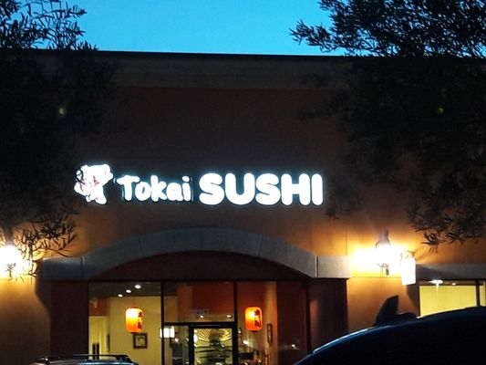
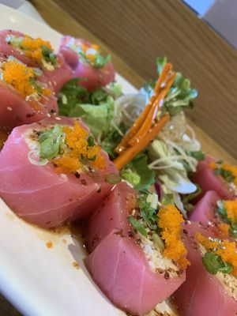
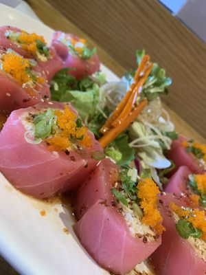
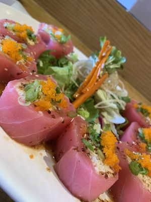

Matthew Ko
Hello, I am currently 19 years old who played tennis and golf for many years, but slowly gravitating towards professional golf one day. I devoted many hours in my youth playing many different sports, however, I am still figuring out which sport I want to play consistently. Golf and tennis were the two sports among many others where I excelled tremendously, and I feel like it's a waste to not persevere.
My first employment was back in the beginning of July, 2019, where I served my time for 3 months as a server at Tokai Sushi. It was my first job and my first step to see what the real world looked like because I was a high school graduate at the time waiting until first quarter of university. I saw the true value behind money and began to appreciate manual labor after I claimed my position as a server.
I see myself as a curator in my spare time when I look at art, I enjoy putting art together because the insight behind it matters to me. I slowly grew my interest in art when I slowly matured, and began to create things for myself. I find it a crucial part for me to be able to resonante with someone else's work of art.
Experience
Unlikely Heroes member
• Volunteered for the organization
• Brought incentive to bring more awareness to human trafficking
• Donated money to neighboring communities to build homes for orphans
Education
UC Riverside
Portfolio


 

